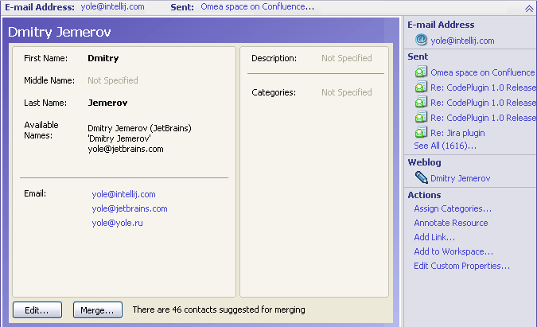
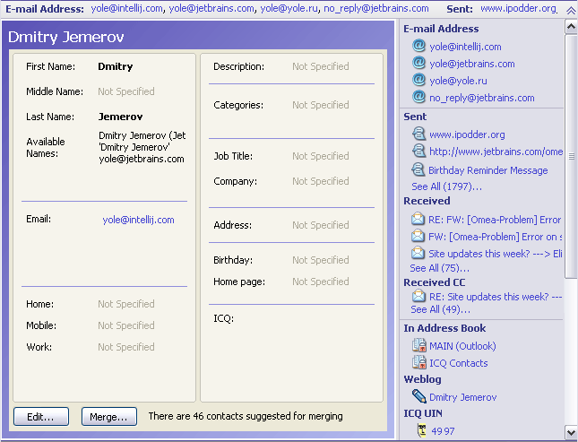
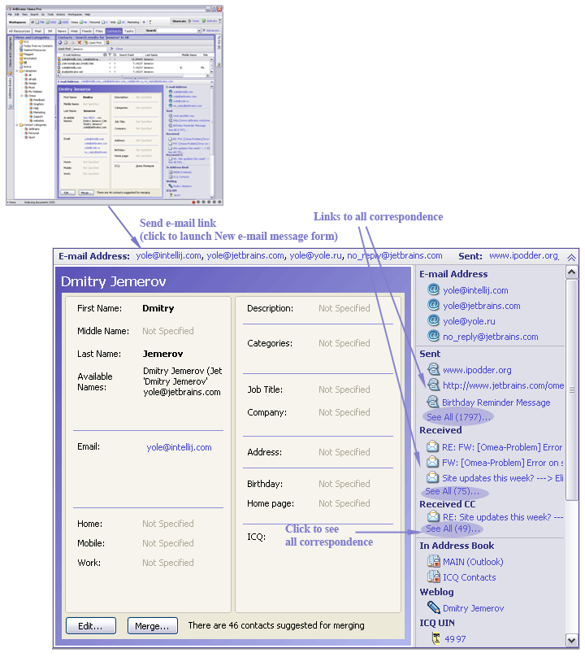
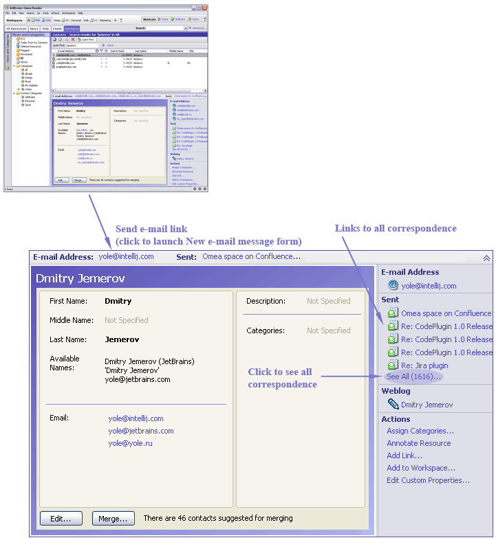
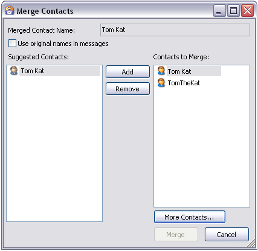
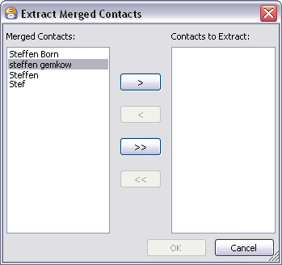
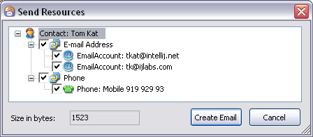
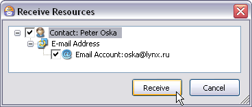

Contacts in Omea ReaderOmea Pro
You can access the Contacts in the Contacts tab or in the Correspondents pane (press Ctrl+Alt+C) . If you click on the tab, you will see the list with the names and e-mail addresses of everyone who has posted to the newsgroups to which you are subscribed. This is because Omea ReaderOmea Pro indexes all resources and information about them is used to support posting and replying to newsgroup articles.


Contact details in the Preview pane and summary of Contact’s posts in the Links & Actions panel
E-mail Accounts in Omea
You have probably come across the concept of e-mail accounts when configuring MS Outlook. You can usually get the e-mail service you need by adding an e-mail account to Microsoft Outlook. Depending on your needs, you can add several e-mail accounts to a single Outlook user profile. Once you install Omea Pro and enable Outlook Plugin, Omea takes your e-mail account information from the Sent Items available in Outlook. You can change your the e-mail accounts in Tools: Options: Omea: User Information.
Sending E-mail to Contacts
If the contact's record contains an e-mail address, it appears as a link on the Links Bar, in the Links and Actions panel, and in the detail in the Item Viewer. You can click any such link to send e-mail to the contact.
Linking to Relevant Content
A useful feature of Contacts in Omea ReaderOmea Pro is the linking. When you select a contact in the Contacts tab, a summary of all his/her posts appears in the Links and Actions panel, along with a link to each post.
Managing Contacts
Omea Pro has a number of contact management features, including integration with MS Outlook contacts. The contacts from your Outlook address book(s) are immediately available in Omea Pro (unless you specify otherwise in the Outlook Address Books options. See Relevant Options Settings, below). If you use ICQ instant messenger or Miranda, your ICQ and Miranda contacts are also available.
As resource arrives from different sources (e-mail, newsgroups, instant messages), new contact records are automatically created in Omea Pro if no contact record already exists. Omea Pro compares only the name and e-mail address of incoming resources to determine if it should create a new Contact record. So for example, when a newsgroup article downloads, Omea Pro will create a contact record for the author derived from the newsgroup contact data for that person (which will be just a name and an e-mail address) if no matching name + e-mail address exists in the database.
Viewing Contacts
You can view your contacts in the Contacts tab of the main window. When you select this tab, the Address Books pane is available in the left sidebar. By default, this pane shows the address books automatically imported from MS Outlook and, if you use them, the supported instant messaging programs (currently ICQ and Miranda). The Views and Categories pane contains a special View for Contacts called Active (see Active View, below).
How the Address Books Appear in Omea
Once you have come through the startup wizard and checked the Address Books which you want to be available in Omea, these Address Books appear in Omea. You can later change the Address Books in Tools: Options: MS Outlook: Outlook Address Books.
As for Mozilla and ICQ Address Books, address books for ICQ Contacts and Miranda Contacts appear in the Address Books pane of the Contacts tab once you have told Omea to index the history of some ICQ account or Miranda profile which you have.
Please note that you cannot delete contacts from Address Books which are listed in Address Books with icon.
Listing Contacts in Address Books
When you select an address book in the Address Books pane, the contacts it contains appear in the Items List.
Listing Contacts Using Views
As with other resource types, you can select one of the default Views in the Views and Categories pane to list only those Contacts that meet the View’s selection criteria. (If the list of Contacts in the Items List is empty, it means no Contacts match the selection criteria.)
The Active View
There is a special View for Contacts called Active. This View selects Contacts with whom you have corresponded (i.e. either sent messages to or received messages from) within a specified period of time. The default time period for Active Contacts is the past 30 days. You can edit the View to specify a longer of shorter period for Contacts you want to be considered as "active". (For more information, see Modifying an Existing View.)
The All View includes not just the contacts you have corresponded with, but also everyone who has posted to any of the newsgroups and feeds you are subscribed to and sent you e-mail messages. That's potentially a very long list. You may prefer to use the Search features to locate a specific contact, or other Views that narrow down the listing. You can of course create new Views for your Contacts if you like.
Listing Contacts Using Categories
As with other resource types, you can "file" Contacts in your Categories (see Organizing Contacts, below). When you select a Category in the Views and Categories pane, only those Contacts filed in the selected Category appear in the list of Contacts (Items List).
Browsing Contacts
When you select an Address Book or a View, the relevant Contacts are listed in the Items List. By default, the list contains columns for Display Name, E-mail Address, Flag, and Annotation, and the Contacts are listed sorted alphabetically by Display Name. You can change the sorting of the list by clicking on a column header to sort the list according to the selected column.
You can select an individual Contact record by clicking on it in the list. You can use the Up and Down arrow keys to scroll through the list of Contacts when the list has focus. When you select a Contact, all details appear in the Item Viewer. When you open the Links & Actions panel, you will find links to all the resources sent to and received from the selected Contact. You can use the button in the detail view to edit the details for the selected contact.


Contact details. Note links to all correspondence in the Links & Actions panel.
Creating and Modifying Contacts
You can create new Contacts in Omea Pro, and modify (edit and delete) the details of existing Contacts in Omea ProOmea Reader. If you create new Contacts, or modify or delete existing Contacts in an Outlook address book, the changes are synchronized with Outlook.
You can also create custom address books. Contacts you create in these are maintained only in Omea Pro and are not synchronized with Outlook. It is not necessary to associate new Contacts with any address book. Such unassociated Contacts appear in the list of Contacts when you select the View named All in the Views and Categories pane. You can also search for unassociated Contacts or create Views with appropriate search criteria to access them. Until you are well acquainted with these features of Omea Pro, you should probably create new Contacts in some Address Book.
Creating a Custom Address Book
To create a new Address Book
- Go to the Contacts tab and display the Address Books pane if it is hidden.
- Click the New Address Book icon on the Address Books pane toolbar.
- Type a name for the new Address Book and press Enter.
Creating New Contacts
You can either create new Contacts in an Address Book, or just as a general Omea Pro contact record.
New Address Book Contacts
To create a new Contact in an Address Book
- Select the desired Address Book in the Address Books pane.
- Right-click on the name of the address book and choose New Contact on the context menu.
- Enter details for the new contact in the New Contact dialog. You must enter at least a name for the Contact in order to be able to save the Contact record.
- When you have entered as much detail as you want, click Save and Close.
New general (unassociated) Contacts
To create a new general Contact (not in any Address Book):
- Make sure that none of the address books is selected in the Address Books pane.
- On the main menu, choose File | New > Contact.
- Enter details for the new contact in the New Contact dialog. You must enter at least a name for the Contact in order to be able to save the Contact record.
- When you have entered as much detail as you want, click Save and Close.
You will only be able to access this kind of Contact record using the All View, Advanced Search, or a custom View with appropriate search criteria.
Deleting Contacts
Some contact records, such as those for people who post to the newsgroups you subscribe to, are created automatically by Omea ReaderOmea Pro. If you delete all of the messages, articles, etc. for such a Contact, Omea ProOmea Reader will delete the contact record. Again, this applies only to auto-created contact records. Omea ProOmea Reader will never delete contact records that were explicitly created by you, or imported from MS Outlook or an instant messaging application, even if you should delete all the messages and other resources associated with them. It is up to you to delete such Contacts.
To delete a Contact:
Browse or search to locate the contact record and select it in the list of Contacts.
Press Del to delete the Contact.
Modifying Contact Details
To modify details of an existing Contact:
Browse or search to locate the Contact and select it in the listing of Contacts.
Double-click the contact in the list, or click the Edit… button in the details viewer.
Change details as desired in the Contacts dialog.
Click Save and Close to effect the changes.
Merging Contacts
Omea ProOmea Reader automatically creates Contact records for senders of incoming resources and recipients of resources you send out if there is no matching Contact record for them in the database. This can lead to multiple Contact records for the same person. For example, someone may have sent you an e-mail from their work address, while you have previously sent e-mails to him/her using a personal e-mail address. In this case separate Contact records will be created only when Contacts have different names in Omea ProOmea Reader. Furthermore, the same person may have sent you instant messages from an ICQ account that has a different name (a nickname, for example). The result is 3 contact records for the same person.
This is a fairly normal scenario, and it presents no problems for the computer. However, you will probably prefer to deal with a single Contact record for the same person that encompasses all the names and e-mail addresses he or she might use in cyberspace. Therefore, Omea ProOmea Reader provides the Merge Contacts feature that you can use to consolidate multiple Contact records for the same person into a single record.
How to Tell if There are Contacts that Can be Merged
Oftentimes you will simply know in the course of your work in Omea Pro that you have multiple Contact records for the same person. For example, suppose you have an imported Outlook Contact record for your friend Kay which has her name as "Kay Sarrah". Then Kay sends you an ICQ message and you realize that you have an ICQ contact record for her ICQ handle "MegaKate". When that happens you can go ahead and use Merge Contacts so in the future you only need to deal with one Contact record for Kay.
You may not always realize when you have multiple contacts for the same person. For example, you may have an e-mail contact for an employee named "Tom Kat". Unbeknownst to you, Tom posts an article on a newsgroup you subscribe to using the nickname "TomTheCat", but the same e-mail address. This results in a second Contact record for Tom. Omea ProOmea Reader has some logic built in to try to guess when multiple Contacts may be for one person and suggest them to you as candidates for merging. In this case, next time you access Tom’s Contact record you would see that there is one Contact that seems to be a candidate for merging. You can review the suggestions in the Merge Contacts dialog and decide to merge the Contacts or not. Ultimately, the decision that multiple Contact records indeed pertain to the same person, and which ones to merge, is up to you.
How to Merge Contacts
Once you have identified that some Contact records are indeed for the same person, you can Merge them using the Merge Contacts dialog.

The Merge Contacts dialog showing one Contact suggested for merging.
To merge contacts:
Locate one of the Contact records that is to be merged and select it in the Items List and in the Item Viewer, which now shows the Contact’s details, click the Merge button. Or select two or more Contact records of the same person by holding Ctrl button and clicking on the Contacts you want to merge, and on the context menu, choose Merge Contacts…
The Merge Contacts dialog appears.If one or more Contacts appears in the Suggested list on the left, review each one and decide which, if any, are for the same person as the one(s) that appear in the Contacts to Merge list on the right.
Select the Suggested Contacts you want to merge and click the Add button. The selected Contact(s) move to the right hand list, which shows all the Contacts that will be merged as a result of the operation.If there are no Contacts in the Suggested list but you know that another contact record exists for the same person, click the More Contacts button. In the Select Contact(s) dialog, check the box for each Contact you want to merge, then click OK. The Contact(s) you checked now appear in the list of Contacts to be merged.
In the Contacts to Merge list, select the Contact with the name you want to have displayed for the merged contact record. That name appears in the Merged Contact Name field.
If you want messages to and from the merged contacts to display the name they were sent under (as opposed to the name selected in the previous step), check the box for Use original names in messages.
Click the Merge button to complete the operation and merge all of the Contacts in the Contacts to Merge list.
Extracting Merged Contacts
Merge Contacts does not wipe out the original Contact records. It simply aggregates the data from all of them and causes Omea ProOmeaReader to present it all together it under a single name. Therefore, if you make a mistake when merging Contacts, or if later on you decide you prefer to work with multiple Contact records for one person, you can revert to the original contact records using the Extract Merged Contacts feature. If more than two Contacts were merged, you can extract all into separate records, or just some of them.
You can tell if a Contact has been merged by looking at its detail. If the selected Contact has been merged, a field Available Names appears in the detail listing all the Contact names that have been merged.
To extract Contact(s) from a merged Contact:
Select the contact in the Items List.
-
Right-click and choose Extract Merged Contact(s) on the context menu.
The Extract Merged Contacts dialog appears.
Extract Merged Contacts dialog
To extract all merged Contacts and revert to separate Contact records for each, click the >> button.
To extract only some of the merged Contacts, in the Merged Contacts list, select each Contact you want to extract from the merged Contacts and revert to a separate contact record, then click the > button.
Click the Extract button to complete the operation.
Tips and Tricks for Contacts
Relevant Options Settings
You can specify which Outlook address books are imported into Omea Pro, indexed, and synchronized with Outlook. Use Tools | Options: MS Outlook: Address Books. For more information, see Reference: Options: Outlook Address Books.
Significance of Contact Icons
In various places in the user interface you may notice a slight difference in the icon that appears with each Contact record.
| Icon | State | Meaning |
|---|---|---|
| "In address book " | Contact is listed in some address book and/or has been added to a Category. | |
| "Myself" | Contact is "myself" Contact (i.e. it is your own contact details). | |
| "Faded" | Contact record exists in Omea Pro, but is not in any address book or Category. |
Moving Contacts Between Address Books
You can move Contacts between Address Books, or if a Contact is not associated with any Address Book, you can move it into one.
To move a Contact to an Address Book:
- Make sure you are in the Contacts tab... switch tabs if necessary.
- If the Address Books pane is not visible in the left sidebar, click the sidebar button to show it.
- Locate the Contact you want to move by browsing or searching as described earlier in this topic.
- Select the Contact in the listing of Contacts (Items List).
- Drag the Contact and drop it into the desired Address Book in the Address Books pane.
Contacts and Workspaces
When you define custom Workspaces, you can associate a subset of all your Contacts with that Workspace. Then, when you work in a particular Workspace, you will only see and deal with the contacts for that Workspace. For example, if you create a Workspace for some project, you can associate only those Contacts that are in some way related to that project.
You can associate contacts with a workspace in one of two ways:
Via the Workspaces dialog (best for associating multiple contacts all at once)
Via drag-and-drop (best for adding one or two new contacts to a Workspace)
To associate Contacts via the Workspaces dialog:
Choose Workspaces | Add/Edit Workspaces.
In the Workspaces dialog, select the Workspace in the list of Workspaces.
Select the Contacts tab. The list on the left (Available) lists all Contacts. The list on the right lists all Contacts currently associated with the selected Workspace.
In the Available list, select the Contact(s) you want to associate with the Workspace. You can begin typing a name in the box above the list to locate a Contact in the list.
With the desired Contact(s) selected in the Available list, click the Add button to add the selected Contact(s) to the selected Workspace.
Click the Close button when you have added all the Contacts you want for the Workspace.
To associate Contacts via Drag-and-Drop:
Locate the Contact you want to add to a different Workspace using any of the ways described in this topic.
Select the Contacts in the Items List.
Drag it over the selector for the target Workspace and drop it there. (Workspace selectors appear beneath the main menu.)
Sharing Contacts with Others
You can share any of your Contacts with other Omea Pro users via e-mail. A special data file is automatically attached to the e-mail message. The recipient can import the data from the attachment in to his or her copy of Omea Pro to create a new Contact record or records from the attached Contact data file.
Sending a Contact
To send a Contact to another Omea Pro user:
- Locate the Contact you want to send and select it in the Items List. You can optionally select multiple Contacts.
-
Right-click and choose Send Resources on the context
menu. The Send Resources dialog for Contact appears.
The Send Resources dialog for Contact
- The dialog lists all the various types of contact information for the selected Contact. Check the box next to each type of contact information you want to send. Clear the checkbox for any you don't want to include.
- Click the Create Email button. A new e-mail message is created with a file attachment named resourcetransfer.xml
- As you would for any e-mail message, address the message to the desired recipient(s), provide a Subject, optionally write text in the message body, and send the message.
Importing a Contact someone has sent you
If another Omea Pro user sends you a Contact by e-mail, when you view the message in the Item Viewer, you will see a bar like the following at the top of the pane:
Click to receive attached resources
Click the link to receive the attached Contact and import it to your Omea contacts. The Receive Contact dialog opens.

Receive Resources dialog displaying e-mail address
It displays the contact details contained in the attached data file. You can select which details to import. Click Receive to add a Contact to your Contacts list. Note that the received Contact does not go into any address book. If you want to add it to one of your address books, select the All view in the Views and Categories pane, use Quick Find to locate the received Contact, and then drag it from the Items List into an address book.
For more information, see Contact Dialog.